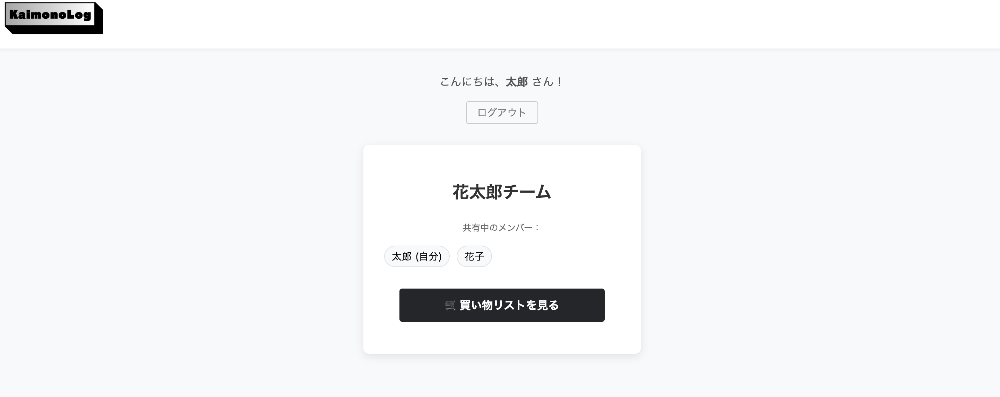
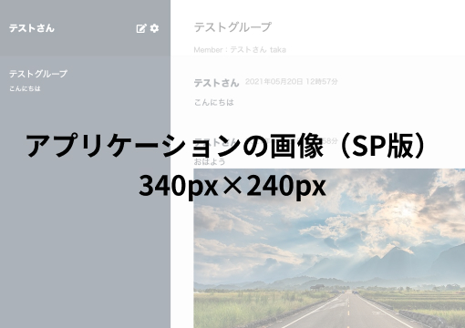
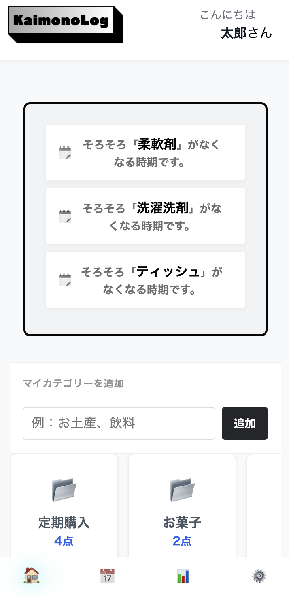

Kaimonolog（買い物共有アプリ）


開発環境
Ruby on Rails / JavaScript (Stimulus, Turbo / Hotwire / chart.js) /PostgreSQL / Fly.io / GitHub / Visual Studio Code
-
概要
制作時間 120時間 URL https://kaimonolog.fly.dev/ -
動作テスト
テスト用アカウント
mail test@test.com PASS 111111
OUTLINEアプリケーションの概要
オリジナルアプリケーションとして、モバイルでの使用を想定した買い物を共有をするアプリを開発しました。
購買履歴を家計簿へ自動連携し、購買履歴から予測機能を搭載。
パートナー間の情報共有と家計管理の効率化を実現するアプリケーション。
-
開発に至った経緯
日常の買い物における「お店での判断迷い」や「家庭内での情報齟齬」を解消したいと考えたのがきっかけです。
具体的には、店舗での「ストックの有無の確認」や、パートナーとの「買い忘れ・買いすぎ」といった無駄を、リアルタイムな情報共有と履歴管理という「仕組み」で解決することを目指し開発しました。
-
開発で工夫したこと

・独自招待コードによるグループ管理の実装：invite-tokenを活用した独自のグループ生成・共有機能を実装。ユーザー単位ではなくグループ単位でのデータ管理を可能にし、スムーズなパートナー連携を実現しました。
・Hotwireによるネイティブアプリのような操作感：モバイルでの利用を前提とし、Rails 7のHotwire（Turbo/Stimulus）を採用。ページ遷移を最小限に抑え、チェック操作時のレスポンスを高速化させることで、ネイティブアプリに近いUXを追求しました。
・現場の利用シーンを想定したUX設計：買い物中の入力を簡略化するため、「店舗ではチェックのみ、金額入力は帰宅後に履歴から編集」という実用的な動線を設計。利便性とデータ精度の両立を図りました。
・運用コストを意識した予測機能のロジック：「定期購入カテゴリー」に基づく予測ロジックを構築。計算アルゴリズムをシンプルに保ちつつ、ユーザーが必要とする情報を提供できる「保守性と機能性のバランス」を意識した実装を行いました。
・データの可視化による管理機能の強化：Chart.js等のライブラリを活用し、カテゴリー別の円グラフや月次比較の棒グラフを実装。視覚的なフィードバックにより、家計の支出分析を容易にしました。
-
今後実装したいと思っていること
将来的には、AIを活用したOCR（光学文字認識）APIの導入を計画しております。現在は手動入力および履歴からの編集が主ですが、レシート撮影のみで購入金額や品目を即時に反映させることで、ユーザーの入力負荷を抜本的に軽減したいと考えています。
この実装を通じて、家計簿としての実用性を最大化させるとともに、自身が目標とする「AIを高度に利活用し、社会に実利をもたらすエンジニア」としての知見を深めていく所存です。